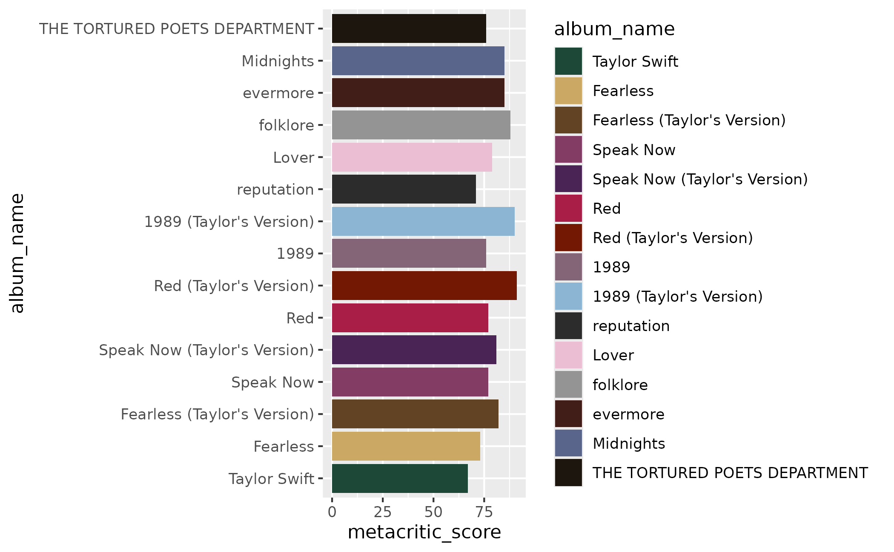
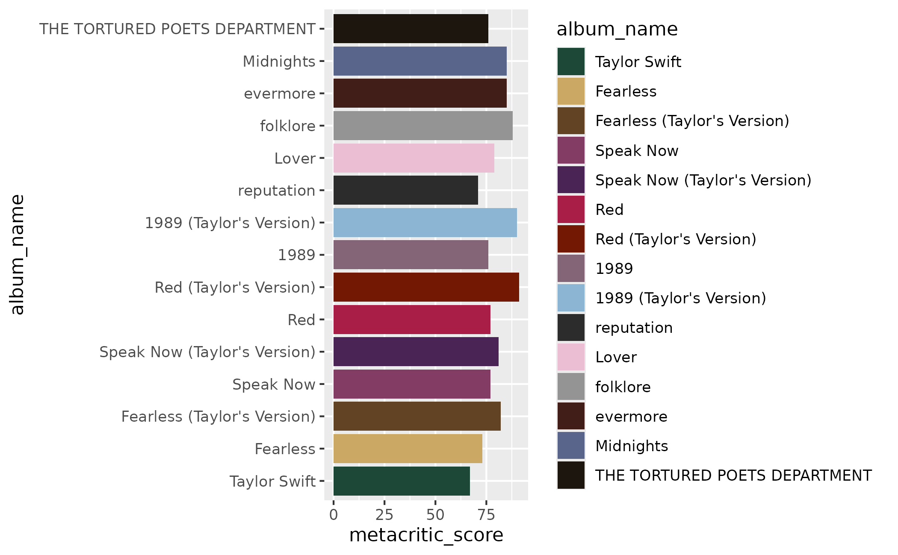

A convenience wrapper for comparing albums with color. In contrast to
scale_fill_taylor_d() and scale_colour_taylor_d(),
scale_fill_albums() and scale_colour_albums() use a single palette, with
one color per album. Specifically, the album_compare palette is used to
apply a color associated with each album.
Arguments
- ...
Other arguments to be passed to
ggplot2::discrete_scale()- aesthetics
The names of the aesthetics that this scale works with.
- breaks
One of:
- limits
One of:
NULLto use the default scale valuesA character vector that defines possible values of the scale and their order
A function that accepts the existing (automatic) values and returns new ones. Also accepts rlang lambda function notation.
- na.value
If
na.translate = TRUE, what aesthetic value should the missing values be displayed as? Does not apply to position scales whereNAis always placed at the far right.
Value
A color scale for use in plots created with ggplot2::ggplot().
Examples
library(ggplot2)
studio <- subset(taylor_albums, !is.na(metacritic_score))
# create a plot that we want to color or fill by album
ggplot(studio, aes(x = metacritic_score, y = album_name)) +
geom_col(aes(fill = album_name))
 # apply a color inspired by each album cover
ggplot(studio, aes(x = metacritic_score, y = album_name)) +
geom_col(aes(fill = album_name)) +
scale_fill_albums()
# apply a color inspired by each album cover
ggplot(studio, aes(x = metacritic_score, y = album_name)) +
geom_col(aes(fill = album_name)) +
scale_fill_albums()
 # even when the axis or levels are rearranged, the correct color is applied
studio$album_name <- factor(studio$album_name, levels = album_levels)
ggplot(studio, aes(x = metacritic_score, y = album_name)) +
geom_col(aes(fill = album_name)) +
scale_fill_albums()

# even when the axis or levels are rearranged, the correct color is applied
studio$album_name <- factor(studio$album_name, levels = album_levels)
ggplot(studio, aes(x = metacritic_score, y = album_name)) +
geom_col(aes(fill = album_name)) +
scale_fill_albums()
